Use MentorOS section by section: register people, match them, follow up and report. Hover over the i icon in any box to see a short description of that section.
1. Home page
After signing in, every section is here. Choose the language at the top right (Türkçe / English) and open this document with User Guide.
Press Open to enter a section.
Hover over the i icon to see what the section is for.
Settings that rarely change, E-mails and Survey Management are inside the last box, Admin.
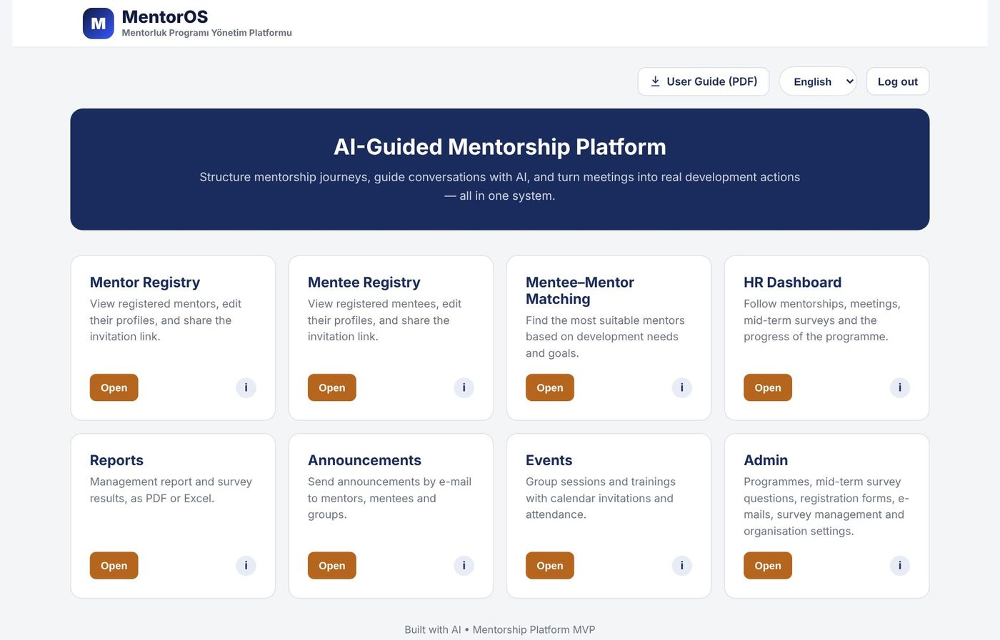
2. Registering mentors and mentees
You do not enter people yourself; they register through a link.
Open Mentor Registry.
Take the invitation link with Copy and share it, or type e-mail addresses and press Send.
People who fill in the form appear in the list; edit a profile with Open.
Do the same for mentees in Mentee Registry.
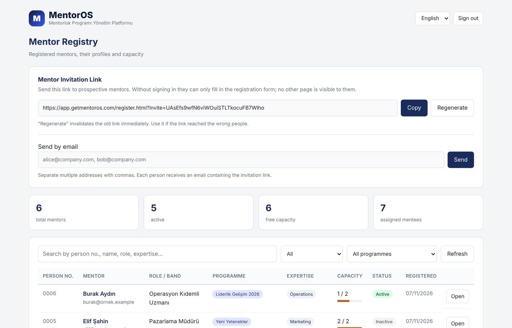
Person number
Everyone who registers gets a person number in your organisation, starting at 0001; the form does not ask for it.
A person is recognised by e-mail: someone who is both a mentor and a mentee has one number.
The number never changes, and a deleted person's number is never given to anyone else.
The same e-mail cannot register twice in the same role (a mentor can still register as a mentee).
When a name or an e-mail changes
Open the person with Open and save the new details. The change also goes to the linked records, and a short note tells you what was updated:
Name: in matches (finished ones too), surveys and events (e.g. a new surname after marriage).
E-mail: in active matches, waiting surveys and upcoming events; later e-mails go to the new address.
The person number and the personal links stay the same.
3. Programmes
Create programmes with start and end dates in Admin → Programmes. Mentors and mentees can be in several programmes.
Open the mentee in Mentee Registry.
Tick the programmes the person should be in and save.
A mentee has at most one active match in each programme and can be matched in different programmes at the same time.
If the mentee is in a group in a programme, that programme's box is locked; take them out of the group first.
Removing a programme in which the mentee has an active match asks first; the match keeps running in that programme.
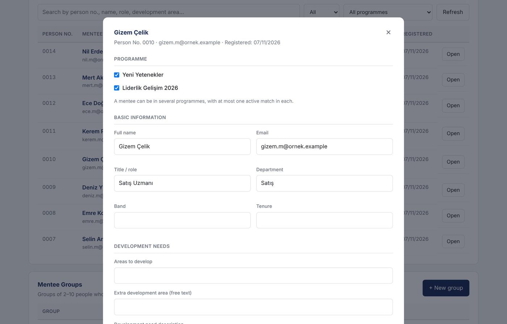
4. Matching
Open Mentee–Mentor Matching, choose the programme, then the mentee (or mentee group).
The end date of the match comes from the programme; without a programme you enter it.
Match with AI: the AI suggests suitable mentors. Manual match: you pick the mentor from the list.
Once matched, a shared workspace opens for the mentor and the mentee.
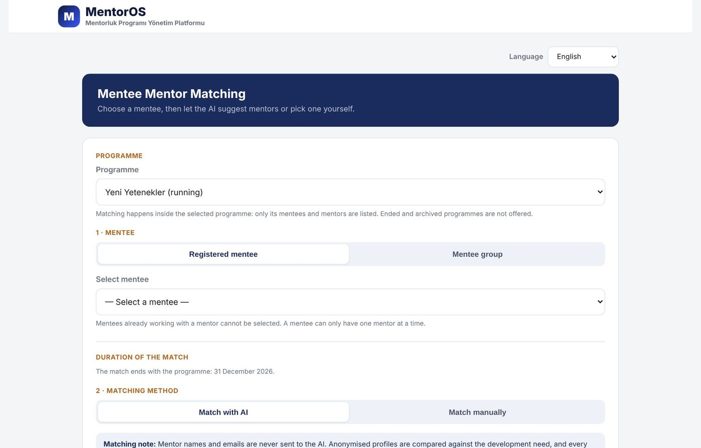
In AI matching, names, e-mails and person numbers are never sent to the AI. See AI and personal data for details.
5. HR Dashboard
Follow every mentorship in one place.
For a new match press Send match e-mail: the mentor and the mentee (each member in a group) get their own personal workspace link.
Meeting Tracking shows who met when and for how long (not what was discussed).
Mid-programme, use the Mid-Term Survey buttons to send a short survey to the mentor, the mentee or both.
When the mentorship ends, ask for the closing survey with Send Survey.
Sending a waiting survey again is a reminder; one person gets at most one reminder per 24 hours.
For matches made earlier, send the match e-mail once more so that everyone gets their personal link.
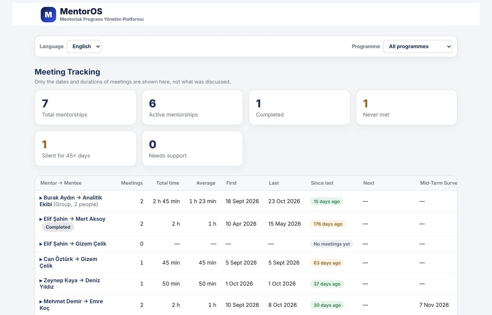
6. Survey Management
In Admin → Survey Management you see every mid-term and closing survey sent, person by person: answered or waiting, and how many reminders went out.
Filter by survey, programme and status, or search by person number / name.
Tick the people to remind and press Remind selected, or press Remind everyone waiting.
A row that cannot be reminded says why: within 24 hours, no e-mail, or the match is not active.
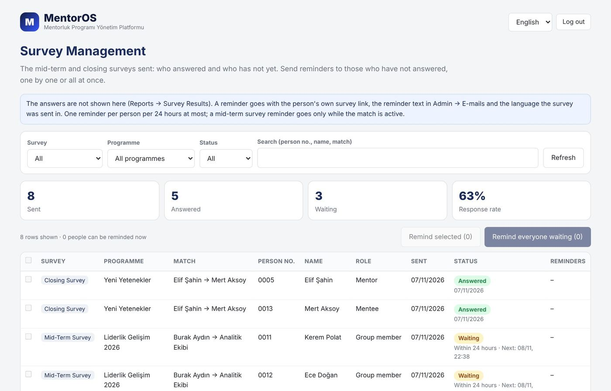
The answers themselves are not shown here; they are in Reports → Survey Results.
7. Announcements and Events
Announcements: write a subject and a message as in an e-mail, choose the recipients (mentors, mentees, groups, programmes or any addresses), attach files if needed and send. Everyone gets their own e-mail; the announcement also shows in the workspaces.
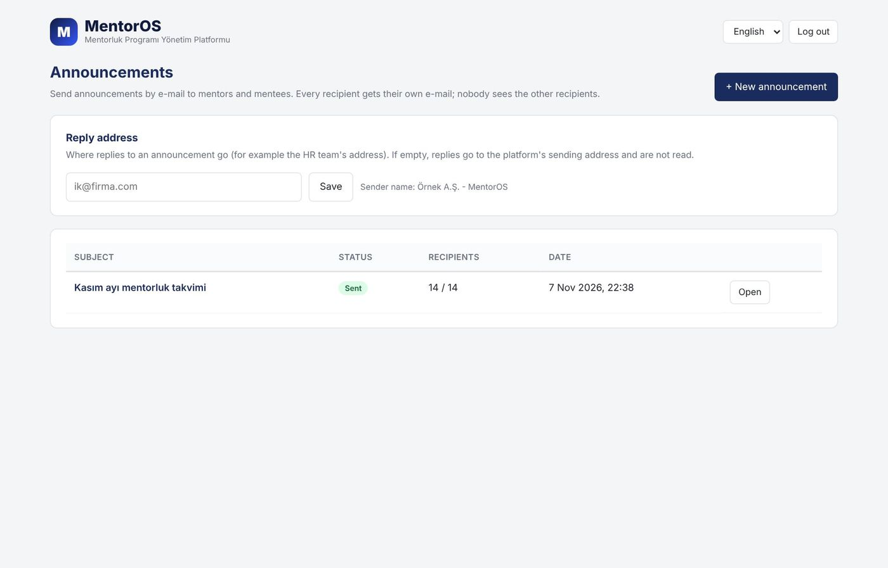
Events:
With + New event enter the date, time and place or online link.
Add participants and send invitations; a calendar invitation goes out and people answer from their own link.
After the event, mark who actually attended.
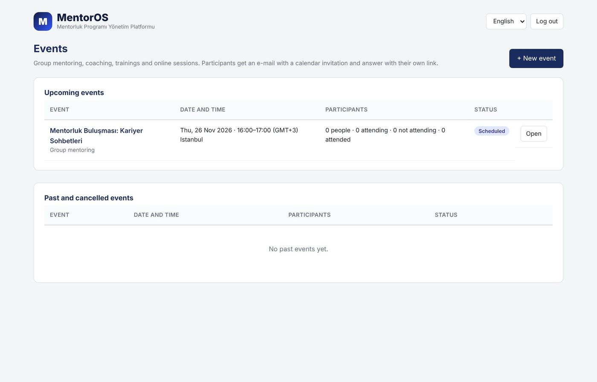
8. Reports
Choose a tab, enter the date range (and the programme if needed) and press Apply. Save with Download PDF or Download Excel.
Management Report: people, matches, meetings and capacity; tables of programmes, mentors, mentees, matches, groups and meetings.
Survey Results: mid-term and closing surveys. Named answers are on screen only; in the files people appear as “Participant 1, 2…”.
Events: invitations and attendance.
Person Report: type a person number or a name and pick the person. You get their programmes (with the mentor/mentee role), the people they are matched with, matches, groups and meetings, and the survey answers of the person and of the people they are matched with. Survey answers are on screen only.
AI Executive Summary: see the next section.
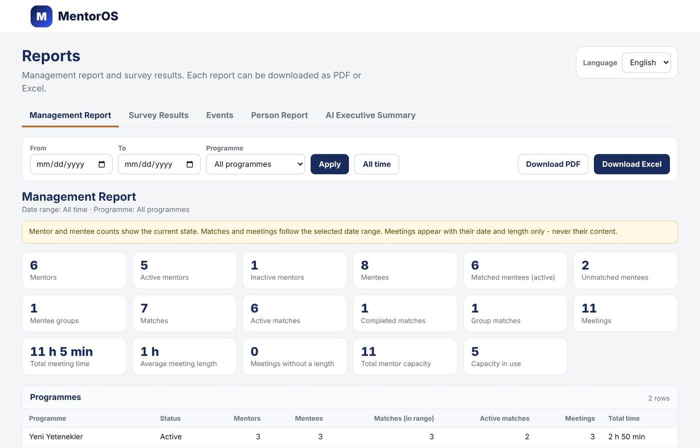
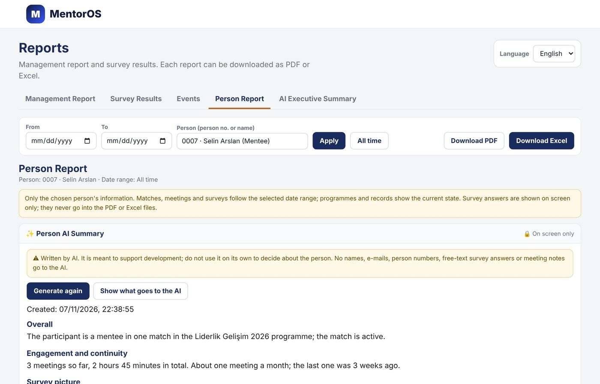
9. AI and personal data
MentorOS uses artificial intelligence (AI) in: Match with AI, the development plan draft in the workspace, the AI Executive Summary and the Person AI Summary.
Never sent to the AI
First name and surname
E-mail and phone
Person number
Free-text survey answers
The content of meeting notes
May be sent to the AI
Numbers, rates and dates
Programme names
Scores and choices (e.g. 4/5, Yes)
Profile details such as job title, department, competencies and development need — names inside are masked
With Show what goes to the AI you see what will be sent before generating a summary.
The last summary is kept; opening the page sends nothing to the AI. Generate again sends a new request.
Check the AI's text against the figures. The Person AI Summary is meant to support development; do not use it on its own to decide about a person.
AI can be turned off for your organisation; then no data goes to the AI and the AI buttons do not work.
AI summaries are shown on screen only; when a person is deleted, their AI summary is deleted too.
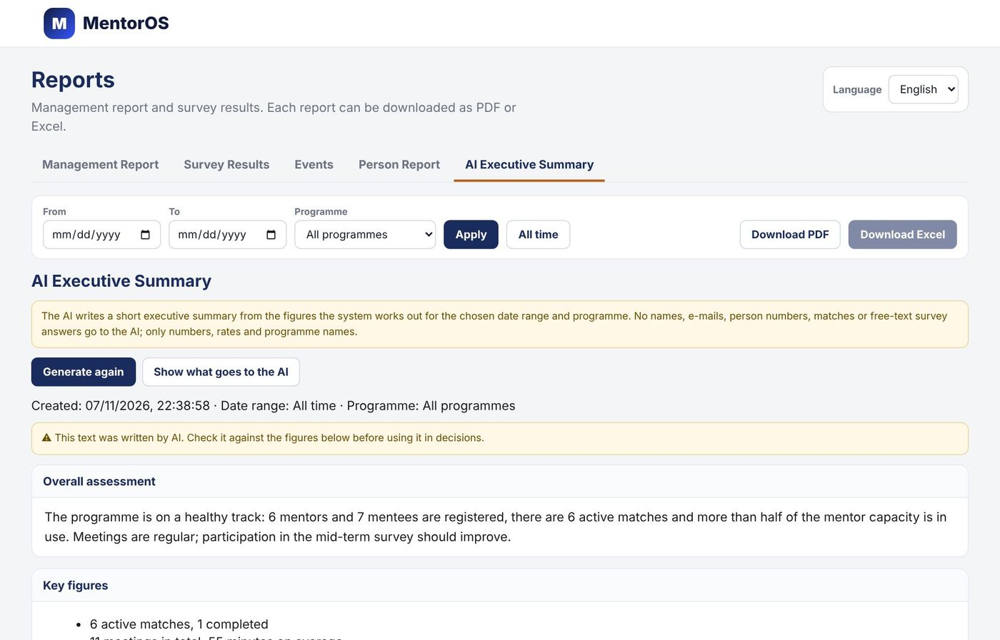
Data protection: we recommend checking with your legal adviser that your privacy notice says personal data may be processed with AI, with names hidden, to evaluate the mentoring process.
10. Admin
The last box on the home page. These are usually set once:
Programmes: programmes and their dates.
Mid-Term Survey Questions: what the mid-term survey asks.
Registration Forms: which fields the forms show and which are required.
E-mails: subject, title, text and button of the invitation, match/workspace, survey and reminder e-mails (Turkish and English separately). Variables such as {name}, {other}, {company}, {programme}, {period} are filled in for each person; see the result with Preview, undo with Back to default.
Survey Management: see section 6.
Organisation Settings: logo and default time zone.